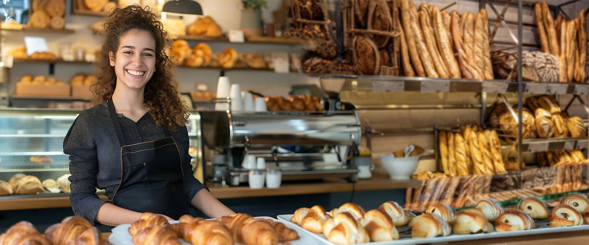
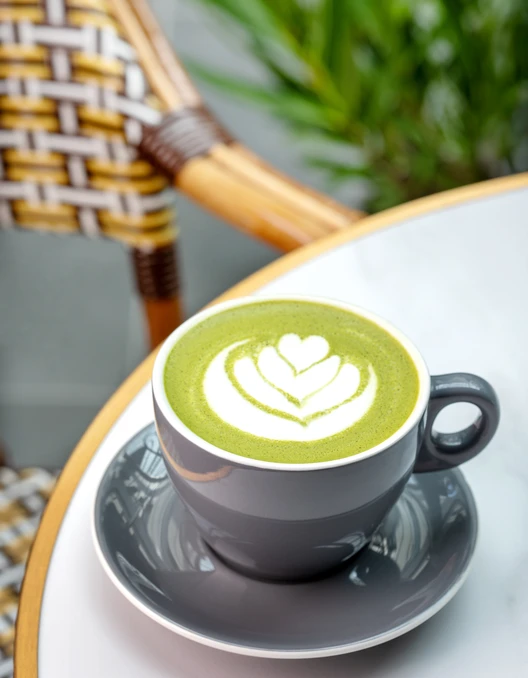

Nos boissons
De quoi accompagner chaque gourmandise
Chaud ou frais, sur place ou à emporter : une sélection de boissons pensée pour accompagner vos pains, pâtisseries et box brunch.
Notre partenaire café
En partenariat avec Café Richard
Pour notre gamme de boissons chaudes, nous travaillons avec Cafés Richard, maison de torréfaction reconnue depuis 1892 pour la qualité de ses cafés et son savoir-faire en communication. Retrouvez ici quelques-uns de leurs visuels, en attendant de les croiser en boutique.


Une envie particulière ?
Demandez conseil en boutique
Notre équipe se fera un plaisir de vous conseiller la boisson idéale pour accompagner votre pause gourmande.